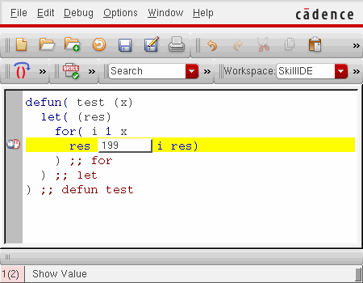
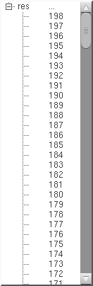

Examining and Modifying Variable Values
When the program encounters a breakpoint, you can evaluate the program variables or change their values to examine “what if” scenarios using the debugger.
- To view the values of program variables and function description within the current scope, select Options – Show Value.
-
Place the mouse cursor over a variable or function in the source code pane displays the corresponding value in a tooltip as illustrated in the following image.

The following image illustrates a program variable that has multiple values, which are displayed as a list with scroll bars:

In tooltips, values of string variables display within double quotation marks and values of undefined variables display as unbound. Also, when you hover the mouse pointer over a function name, the tooltip prints the function syntax (from the SKILL Finder database, if available) or the function arguments list (for the user-defined functions).
Related Topics
Functions and Variables Tracing
Return to top